Ръководство
Всичко за това как работи Bobby Kids: за какво служи всяка част, как се играят игрите и какво прави всяка настройка. Bobby Kids е създадена за деца от 2 до 8 години и всяка игра е замислена така, че детето да я играе само, с възрастен наблизо.
Първи стъпки
След началния екран Bobby Kids отваря основния екран. Три големи бутона водят към трите части на приложението:
- Учи: разглеждане на картинки и чуване на имената им.
- Провери се: кратки предизвикателства, които проверяват наученото.
- Играй: игри за памет, логика и внимание.
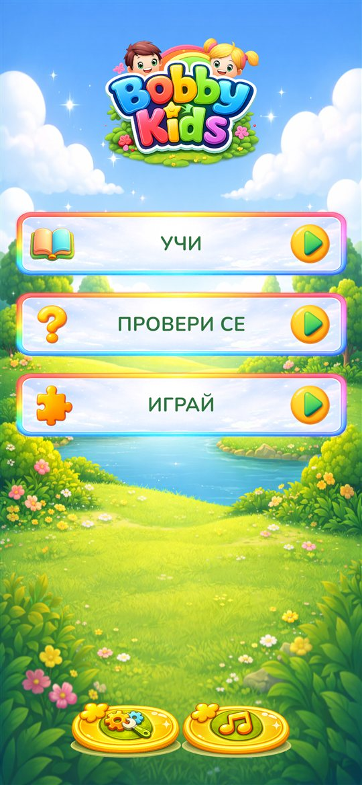
Бутоните в долната част на основния екран
- Бутон за настройки (вляво): отваря Настройки, но само след като възрастен реши кратка сметка. Вижте Настройки.
- Бутон за музика (точно до него, вдясно): пуска следващата песен. Децата обичат да го натискат, затова можете да го скриете от Настройки. Скрит е и когато силата на музиката е 0.
Придвижване
В менютата и игрите бутоните най-долу връщат с една стъпка назад или направо към основния екран. В „Провери се“ и „Играй“ детето първо избира игра. Повечето игри след това предлагат тема, например животни, плодове или превозни средства, а Всички смесва всички теми.
Език
Bobby Kids говори на български и английски. Всички думи, имена и гласове се сменят с езика, който избирате в Настройки. Да чуе същите картинки на два езика е лек начин детето да започне втори език.
Учи
За какво служи: първи думи, слушане и назоваване на нещата около нас.
Изберете тема, например животни от фермата, плодове или музикални инструменти. Появява се решетка с големи карти с картинки.
- Докоснете карта. Тя се уголемява, обръща се и името ѝ се изговаря.
- Докоснете я отново, за да я приберете.
Когато Премахване на използваните карти е включено в Настройки (по подразбиране), разгледаната карта излиза от решетката. Когато всички карти свършат, решетката се пълни отново, така че детето може да ги разглежда колкото пъти иска. Бутонът с кръгла стрелка най-долу пълни решетката отново по всяко време. Изключете настройката, ако искате картите винаги да остават на мястото си.
Съвет: кажете думата заедно с приложението, а после попитайте „Къде е кравата?“ и оставете детето да покаже.
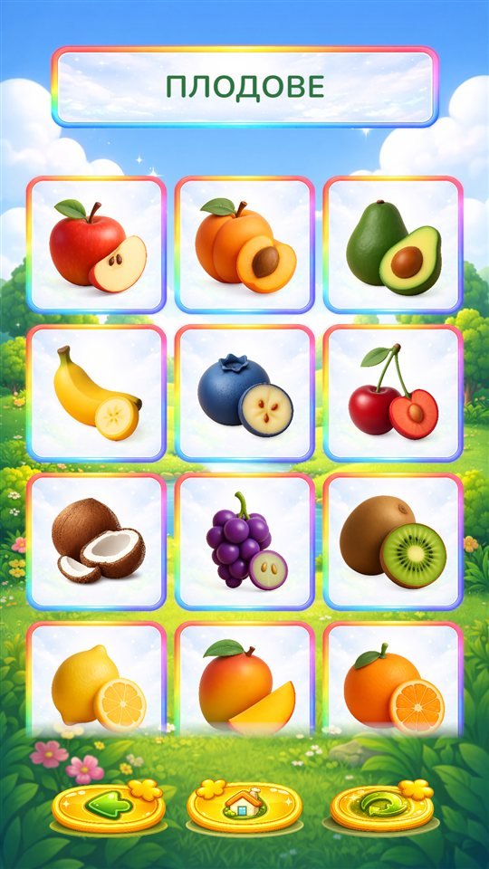
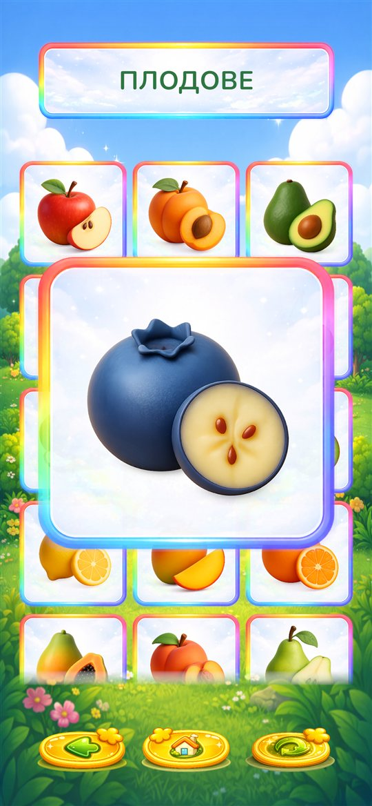
Провери се
Три кратки предизвикателства, с които се упражнява наученото. Всяко се играе на нива: първото ниво е лесно, а всяко следващо добавя по малко. Вижте Нива и напредък.
Намери го
За какво служи: разпознаване на думи на слух и свързване на думата с картинката.
Приложението казва име, например „жираф“. Детето докосва съответната картинка. Верният отговор светва и звучи радостно. Грешният се поклаща и детето просто опитва отново. Бутонът с високоговорител горе казва името отново. На по-високите нива има повече картинки за избор.
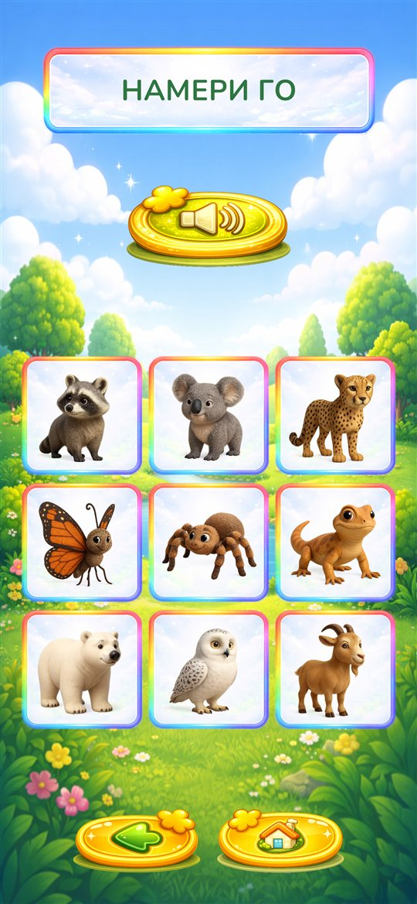
Колко са?
За какво служи: броене на предмети и разпознаване на числа.
По екрана са разпръснати картинки и приложението пита колко са от един вид. Детето ги преброява и докосва правилното число отдолу. Бутонът с високоговорител повтаря въпроса. На по-високите нива има повече картинки и повече различни видове, така че броенето на точните иска повече внимание.
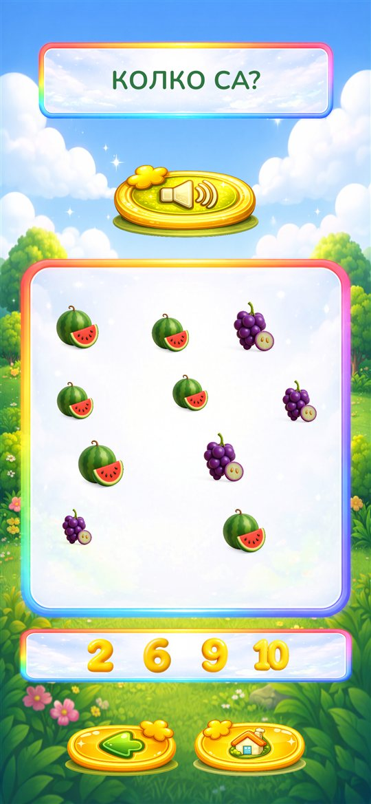
Преброй и събери
За какво служи: броене до цел, съпоставяне и внимателно докосване.
Най-горе приложението показва какво да се събере и по колко от всяко. Детето докосва съответните картинки на екрана и всяка от тях скача в своята кутия долу. Когато всички кутии са пълни, рундът е спечелен. Ако детето докосне картинка, която не е нужна, или една в повече, тя леко се поклаща. На по-високите нива има повече видове и по-големи числа.
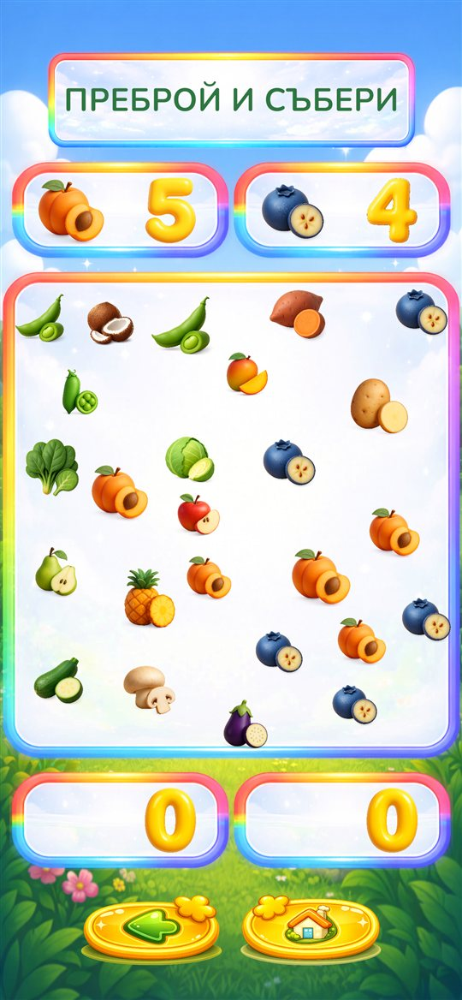
Играй
Четири игри, които развиват паметта, логиката и вниманието. Както викторините, и те се играят на нива.
Игра за памет
За какво служи: памет и съсредоточаване.
Всички карти са с лицето надолу. Детето обръща по две, търсейки двойки. Познатата двойка остава открита. Две различни карти стоят отворени за момент и после се обръщат обратно. На по-високите нива има повече карти.
Две настройки променят тази игра: Време, за което картите стоят отворени (колко дълго остават отворени две различни карти) и Премахване на познатите карти (дали откритите двойки излитат, или остават на масата, посивели). Вижте Настройки.
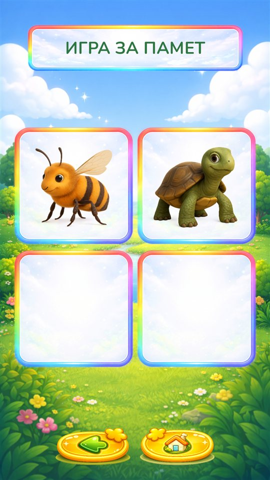
Сортирай ги
За какво служи: подреждане по групи, първата стъпка към логическото мислене.
Картинки от две или повече групи са смесени, например превозни средства и дрехи. Детето плъзга всяка картинка в кутията, където ѝ е мястото. При грешна кутия картинката се връща, за да опита отново. На по-високите нива има повече картинки и повече групи.
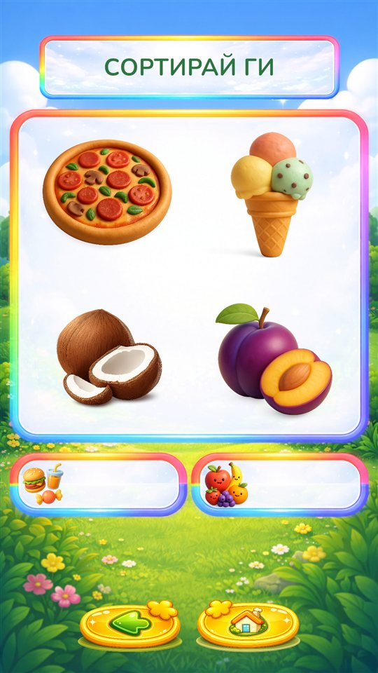
Намери сянката
За какво служи: внимателно разглеждане на форми и очертания.
Показани са тъмни сенки, а под тях цветните картинки. Детето плъзга всяка картинка върху нейната сянка. На по-високите нива има повече сенки и повече картинки за избор, включително такива, които не пасват.
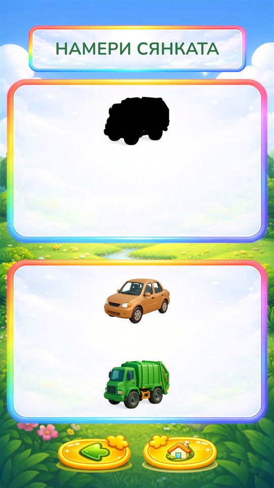
Къде е слънцето?
За какво служи: проследяване с поглед, внимание и търпение.
Картите се показват с лицето нагоре за момент: на една от тях е слънцето, а на другите има дъждовни облаци. После се обръщат и се разместват. Когато спрат, детето докосва картата, под която мисли, че е слънцето. На по-високите нива има повече карти, които се движат по-бързо и по-дълго.
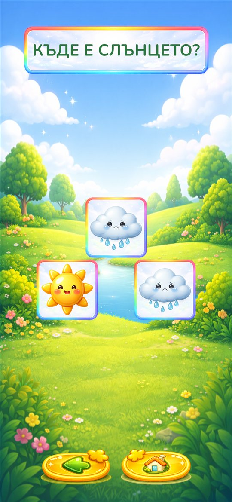
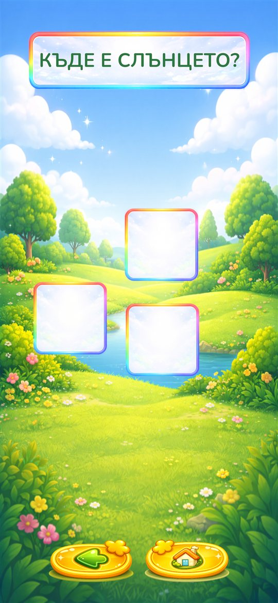
Нива и напредък
Всяка викторина и игра започва с панела Избери ниво. В началото е отворено само ниво 1. Детето избира ниво и натиска бутона за игра.
- Всяко ниво се играе няколко пъти подред, всеки път с нови картинки. Колко пъти, се задава с Повторения на Ниво Преди Следващото в Настройки (по подразбиране 3).
- След последния рунд блясъци и „Браво!“ отбелязват успеха и се отваря следващото ниво.
- Отворените нива остават отворени. Детето винаги може да се върне към по-лесно ниво.
- Напредъкът се пази само на това устройство. Не се споделя между устройства и се изтрива, ако приложението бъде деинсталирано.
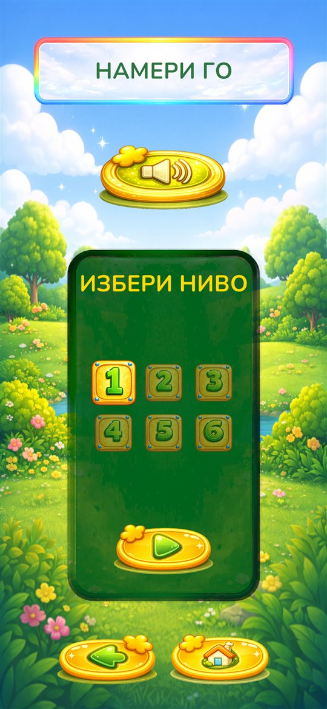
Настройки
Докоснете бутона за настройки на основния екран. Под надписа Попитай възрастен се появява кратка сметка, например „7 + 5 =“. Въведете отговора и натиснете отметката или „Готово“ на клавиатурата. При грешен отговор се появява нова сметка. Тази родителска проверка пази малките деца от Настройки и от покупки.
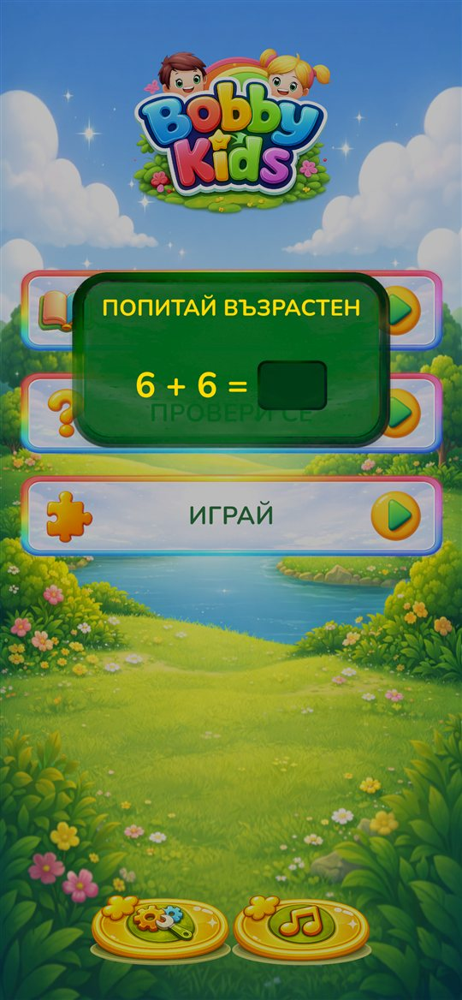
Настройките са разделени на раздели. Докоснете заглавието на раздел, за да го отворите. Всяка промяна се запазва веднага. В по-новите версии на приложението най-долу в Настройки се вижда версията му, което е полезно, когато съобщавате за проблем.
Пълна версия
Докато използвате безплатната версия, това е първият раздел. В него са бутоните за отключване и Възстанови покупката и връзка към политиката за поверителност. След като пълната версия бъде отключена, разделът се премества най-долу в Настройки, защото рядко ще ви трябва отново: само за „Възстанови покупката“, например на нов телефон. Вижте Пълна версия.
Общи
- Език
- Докоснете знамето за български или английски. Сменя всички текстове и гласове.
- Музика
- Сила на фоновата музика от 0 до 10 (по подразбиране 5). При 0 музиката е изключена и бутонът за музика на основния екран е скрит. Силата на изговорените думи не се променя: за тях използвайте бутоните за звук на устройството.
- Песен
- Всяка песен има своя картинка с инструмент на плъзгача. Изберете една от петте песни, която да се повтаря, или Всички (по подразбиране), за да звучат всички песни в случаен ред. Бутонът за музика на основния екран променя същата настройка.
- Бутон за музика
- Показва или скрива бутона за музика на основния екран (по подразбиране е включен).
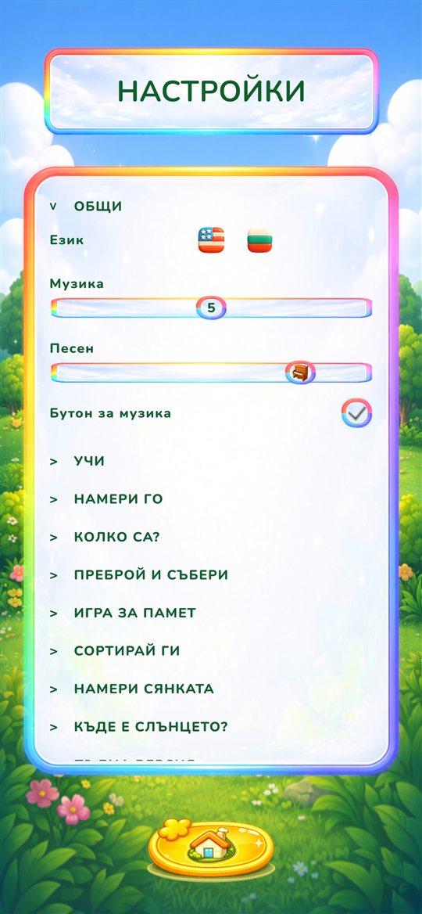
Учи
- Премахване на използваните карти
- Включено (по подразбиране): разгледаната карта излиза от решетката, а решетката се пълни отново, когато се изпразни. Изключено: картите винаги се връщат на мястото си. Вижте Учи.
Игрите в „Провери се“ и „Играй“
Всяка игра има свой раздел с два плъзгача:
- Максимално Ниво
- Колко нива предлага играта. По подразбиране са достъпни всички. Намалете го, за да задържите малко дете на по-лесните нива; по-високите нива тогава са скрити, не изтрити, и се връщат, когато го увеличите.
- Повторения на Ниво Преди Следващото
- Колко рунда от едно ниво трябва да се изиграят, преди да се отвори следващото, от 1 до 5 (по подразбиране 3). Повече повторения означават повече упражнение, преди да стане по-трудно. При 1 играта продължава напред след всеки рунд.
| Игра | Максимално ниво | Повторения |
|---|---|---|
| Намери го | 1–6 | 1–5 |
| Колко са? | 1–8 | 1–5 |
| Преброй и събери | 1–6 | 1–5 |
| Игра за памет | 1–7 | 1–5 |
| Сортирай ги | 1–7 | 1–5 |
| Намери сянката | 1–6 | 1–5 |
| Къде е слънцето? | 1–7 | 1–5 |
Разделът на „Игра за памет“ има още две настройки:
- Време, за което картите стоят отворени
- Колко дълго две различни карти остават отворени, преди да се обърнат, от 1 до 3 секунди (по подразбиране 1). Дайте повече време на по-малките деца.
- Премахване на познатите карти
- Включено (по подразбиране): откритите двойки излитат от масата и остават по-малко карти. Изключено: откритите двойки остават на мястото си, посивели, което прави играта малко по-трудна.
Съвет за дете на 2–3 години: намалете Максимално Ниво на 2 или 3 и оставете повторенията на 3. За по-голямо дете, на което му става скучно, задайте повторенията на 1.
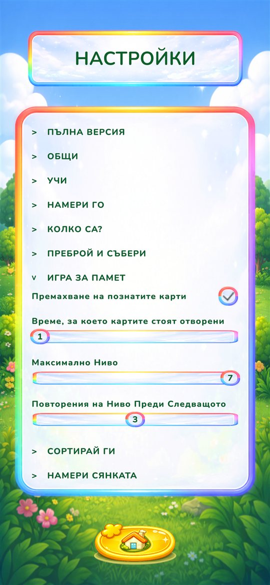
Пълна версия
Bobby Kids се изтегля безплатно. Безплатната версия включва животни от фермата и гората, плодове и зеленчуци, както и „Намери го“ и „Игра за памет“ с тези теми. Пълната версия отключва всички 15 теми в „Учи“, всички 10 групи животни и всичките седем игри. Вижте пълното сравнение.
Заключени елементи
Заключените теми и игри са с катинар. Ако детето докосне такъв елемент, вижда само съобщението „Помоли възрастен да го отключи от Настройки“. Не се отваря екран за покупка, така че детето не може да купи нещо по невнимание.
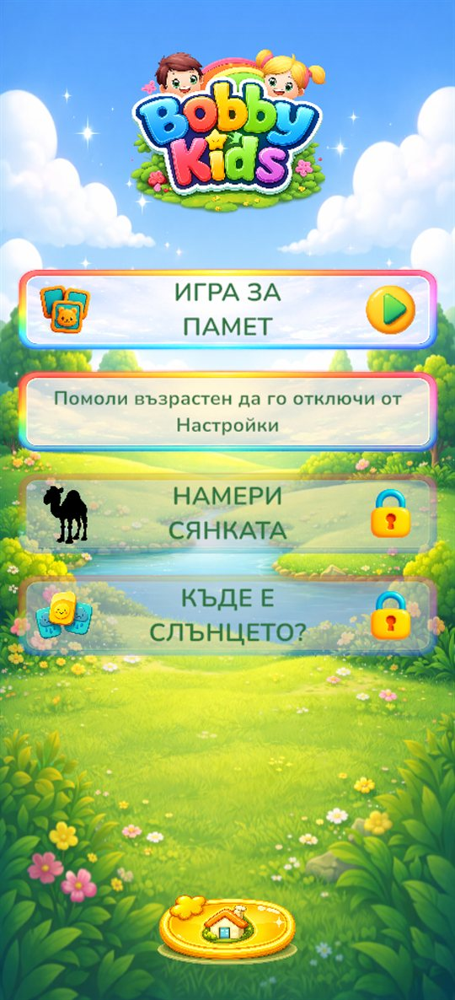
Как да отключите
- На основния екран докоснете бутона за настройки и решете сметката.
- Отворете раздела Пълна версия най-горе.
- Докоснете бутона за отключване, на който е изписана цената за вашата държава, и потвърдете плащането в Google Play или App Store.
- Появява се съобщението „Благодарим ви! Всичко е отключено.“ и всичко се отваря веднага.
Това е еднократна покупка: без абонамент и без реклами.
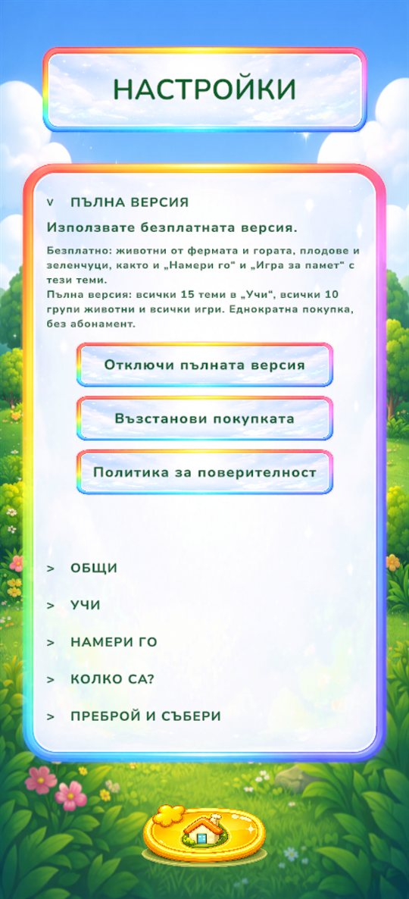
Нов телефон или преинсталирано приложение
Отворете Настройки, раздела Пълна версия, и докоснете Възстанови покупката. Използвайте същия профил в Google или Apple, с който е направена покупката. Покупката важи само в същия магазин: покупка в Google Play не отключва приложението на iPhone и обратно.
Въпроси и отговори
- Няма музика.
- Проверете дали „Музика“ в Настройки е над 0 и дали звукът на устройството е усилен.
- Музиката е наред, но искам да е по-тиха от гласовете.
- Намалете „Музика“ в Настройки. Тя променя само музиката, не изговорените думи.
- Детето постоянно сменя песните.
- Изключете Бутон за музика в Настройки, раздел „Общи“.
- Играта е твърде трудна или твърде лесна.
- Променете Максимално Ниво и Повторения на Ниво Преди Следващото за тази игра. Вижте Игрите в „Провери се“ и „Играй“.
- „Възстанови покупката“ казва, че не е намерена предишна покупка.
- Уверете се, че устройството е влязло със същия профил в Google или Apple, с който е купена пълната версия, и опитайте отново.
- При отключване пише, че магазинът не е достъпен.
- Проверете интернет връзката и дали сте влезли в Google Play или App Store, и опитайте по-късно.
- Загубихме напредъка си.
- Напредъкът се пази само на устройството, затова се нулира при деинсталиране или преминаване към ново устройство. Пълната версия не се губи: използвайте „Възстанови покупката“.
- Събира ли приложението данни или показва ли реклами?
- Не. Няма реклами, профили и проследяване. Вижте Политиката за поверителност.
- Нещо друго?
- Пишете ни. С радост ще помогнем.